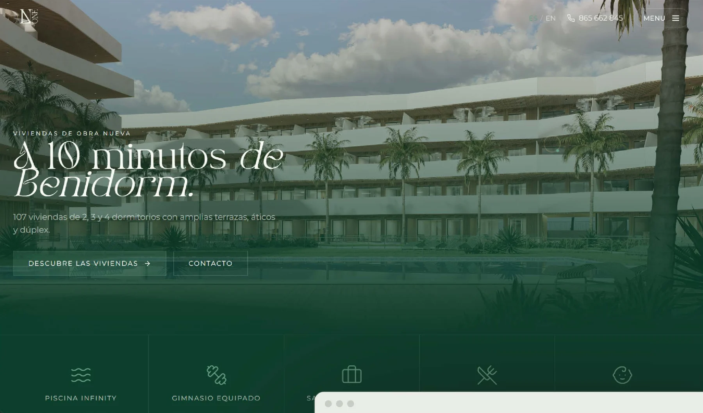
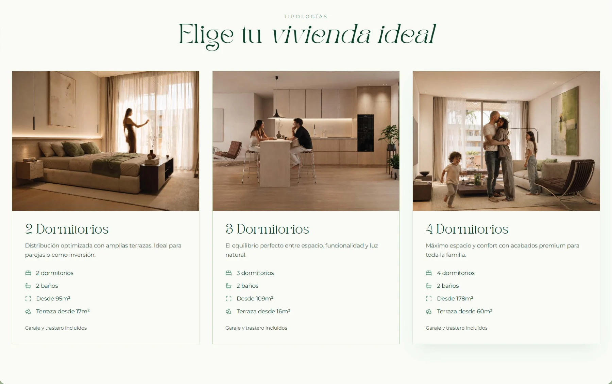
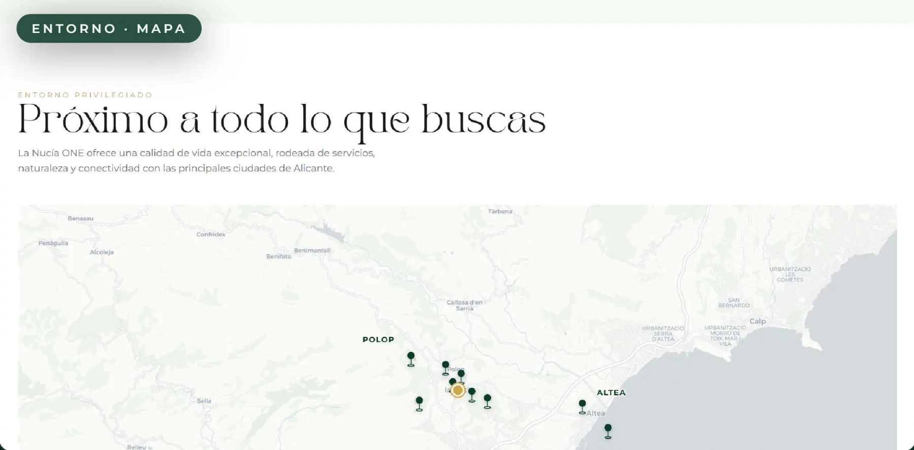
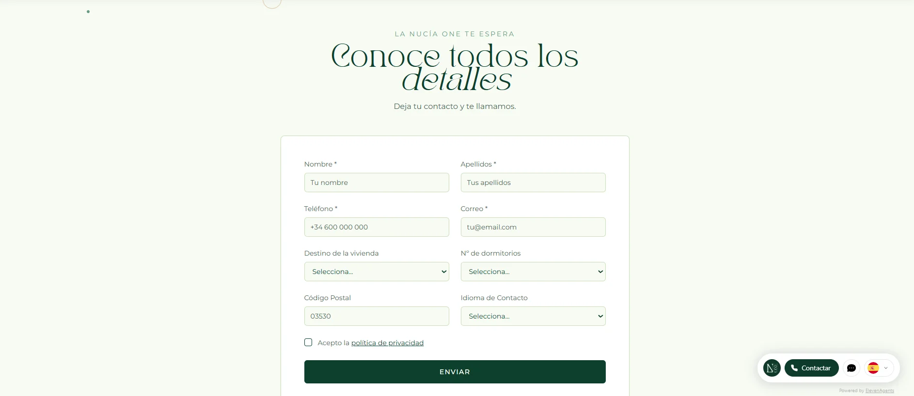
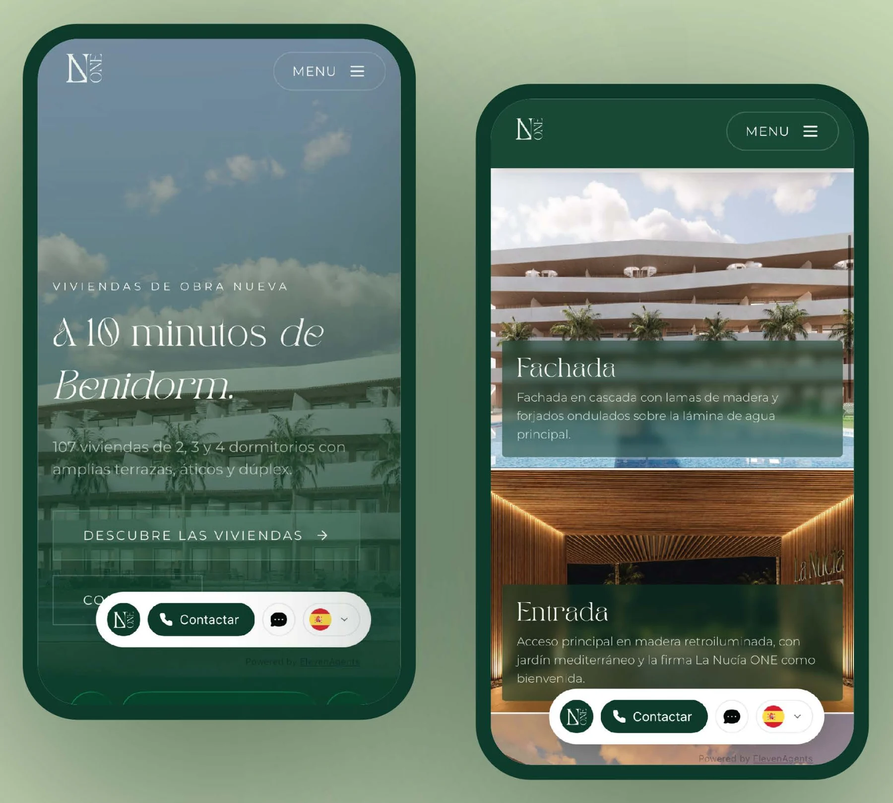

Diseño web UX/UI · Sector inmobiliarioUX/UI web design · Real estate
La Nucía ONE
Web de una promoción de obra nueva en La Nucía, Alicante: 107 viviendas de lujo mediterráneo a diez minutos de Benidorm.Website for a new-build development in La Nucía, Alicante: 107 Mediterranean luxury homes ten minutes from Benidorm.
- UX/UI
- Desarrollo webWeb build
- Responsive

- Qué esWhat it is
- 107 viviendas de 2, 3 y 4 dormitorios de obra nueva en La Nucía, Alicante. Gestionada por Activum Real Estate.107 new-build homes with 2, 3 and 4 bedrooms in La Nucía, Alicante. Managed by Activum Real Estate.
- El objetivoThe goal
- Generar leads cualificados y agendar visitas, presenciales o virtuales, para una compra de alto valor.Generate qualified leads and book visits, in person or virtual, for a high-value purchase.
- Mi rolMy role
- Diseño UX/UI completo más maquetación y desarrollo web.End-to-end UX/UI design plus web layout and build.
- HerramientasTools
- Lovable · Figma · Illustrator
- AñoYear
- 2026
El reto y los primeros pasosThe challenge and first steps
Vender un estilo de vida, no solo metros.Selling a lifestyle, not just square metres.
DescubrimientoDiscovery
Antes de diseñar una sola pantalla analicé webs de promociones de obra nueva de gama alta y definí al comprador tipo: perfil nacional e internacional buscando segunda residencia o inversión, que decide con la emoción y confirma con los datos.Before designing a single screen I analysed high-end new-build websites and defined the typical buyer: national and international, looking for a second home or an investment, who decides with emotion and confirms with data.
De ahí salió la premisa del proyecto: la web debía funcionar como escaparate aspiracional y, a la vez, como una máquina de captar leads.That set the premise: the site had to work as an aspirational showcase and, at the same time, as a lead-capture machine.
Tres tensiones a resolverThree tensions to resolve
- Lujo con cercaníaLuxury that feels close
Transmitir prestigio en una compra grande sin que la web se sienta fría o inaccesible.Convey prestige in a big purchase without the site feeling cold or out of reach.
- Mucha información, sin saturarLots of information, no overload
Tipologías, calidades, ubicación y amenities presentados de forma digerible y jerarquizada.Home types, specs, location and amenities presented in a digestible, prioritised way.
- Contacto claroClear contact
Facilitar múltiples vías de contacto (cuatro oficinas distintas) visibles en todo momento.Several contact routes (four different offices) visible at all times.
Arquitectura de la informaciónInformation architecture
Cada página responde una pregunta distinta.Each page answers a different question.
- 1¿Qué es?What is it?HomeHome
El proyecto y su promesaThe project and its promise
- 2¿Qué vivienda?Which home?ViviendasHomes
Tipologías 2 / 3 / 4 dorm.2 / 3 / 4-bed types
- 3¿Cómo se ve?What does it look like?EspaciosSpaces
Galería y amenitiesGallery and amenities
- 4¿Dónde está?Where is it?EntornoArea
Mapa y distanciasMap and distances
- 5¿Cómo contacto?How do I get in touch?ContactoContact
Formulario y visitasForm and visits
Del qué es al cómo contacto: el flujo lleva al usuario de la promesa a la acción, reduciendo la fricción en cada paso.From what is it to how do I get in touch: the flow takes users from promise to action, reducing friction at every step.
ProcesoProcess
De la idea a la interfaz.From idea to interface.
- ResearchResearch
Benchmark de promociones de lujo y comprador tipoBenchmark of luxury developments and typical buyer
- ArquitecturaArchitecture
Flujo de 5 páginas, una pregunta por página5-page flow, one question per page
- WireframesWireframes
Estructura y jerarquía en baja fidelidadLow-fidelity structure and hierarchy
- UIUI
Sistema visual, tipografía y componentesVisual system, typography and components
- DesarrolloBuild
Maquetación y puesta en producciónLayout and launch
Detalles de UIUI details
El design system.The design system.
Un solo sistema de tokens (tipografía, color y componentes) aplicado con coherencia en toda la web.A single token system (typography, colour and components) applied consistently across the site.
TipografíaTypography
El contraste recto / cursivo dentro del mismo titular es el recurso de marca: la palabra clave siempre en itálica.The upright / italic contrast within one headline is the brand device: the key word is always italic.
ComponentesComponents
Botones sólido y outline, campos y selects del formulario, checkbox de privacidad y una barra de contacto flotante con WhatsApp e idioma.Solid and outline buttons, form fields and selects, a privacy checkbox and a floating contact bar with WhatsApp and language.
Iconos de amenities con Lucide, trazo 1.75.Amenity icons from Lucide, 1.75 stroke.
Color
#0D3A2A#436346#629C79#CBDCB8#F4FAF0#D19848Verde profundo → salvia → crema como base. Ocre solo como acento.Deep green → sage → cream as the base. Ochre only as an accent.
La soluciónThe solution
El Home.The Home.
El comprador decide con la emoción, así que la home vende primero el estilo de vida: un hero a pantalla completa con fotografía real y un titular que sitúa la promesa (a 10 minutos de Benidorm) antes que ningún dato.Buyers decide with emotion, so the home page sells the lifestyle first: a full-screen hero with real photography and a headline that states the promise (10 minutes from Benidorm) before any data.
Por qué asíWhy
El doble CTA (sólido + outline) da salida tanto al que quiere reservar visita ya como al que aún explora, sin forzar la decisión.The double CTA (solid + outline) serves both the visitor ready to book and the one still exploring, without forcing a decision.
Amenities arribaAmenities up top
La barra de iconos comunica el valor (piscina, gimnasio, coworking, gastrobar) en segundos, justo bajo el hero, antes del scroll.The icon bar communicates the value (pool, gym, coworking, gastrobar) in seconds, right under the hero, before scrolling.
Las viviendasThe homes
El corazón de la venta.The heart of the sale.
Las viviendas son lo que realmente se vende: por eso las tipologías (2, 3 y 4 dormitorios) tienen su propia página, con cards de foto y specs en iconos para comparar de un vistazo. Todo lo demás (entorno, amenities, calidades) acompaña y da razones para dar el paso.The homes are what is really being sold, so the types (2, 3 and 4 bedrooms) get their own page, with photo cards and icon specs to compare at a glance. Everything else (area, amenities, specs) supports the decision.

Entorno y contactoArea and contact
Ubicación privilegiada.A prime location.
La ubicación es un argumento de venta en sí mismo, así que el entorno tiene un mapa interactivo: pines de los municipios cercanos y un carrusel de cards de distancia (min / km) que el usuario recorre en scroll horizontal, en vez de una lista estática.Location is a selling point in itself, so the area page has an interactive map: pins for nearby towns and a carousel of distance cards (min / km) that users swipe through horizontally instead of a static list.


Cierra el flujo el formulario de contacto, con 4 oficinas: La Nucía · Alicante · Madrid · Online.The flow ends with the contact form, with 4 offices: La Nucía · Alicante · Madrid · Online.
ResponsiveResponsive
La versión móvil.The mobile version.
Buena parte del tráfico de una promoción llega desde el móvil (anuncios, redes, portales), así que la experiencia se diseñó pensando en el pulgar, no como una reducción del escritorio.Much of a development’s traffic comes from mobile (ads, social, property portals), so the experience was designed for the thumb, not as a shrunken desktop.
- Jerarquía vertical y CTAs dentro del alcance del dedo.Vertical hierarchy and CTAs within thumb reach.
- El botón de contacto queda fijo y siempre accesible.The contact button stays fixed and always accessible.
- Formularios simplificados, en pasos cortos, para reducir el abandono.Simplified forms in short steps to reduce drop-off.

ResultadosResults
La Nucía ONE